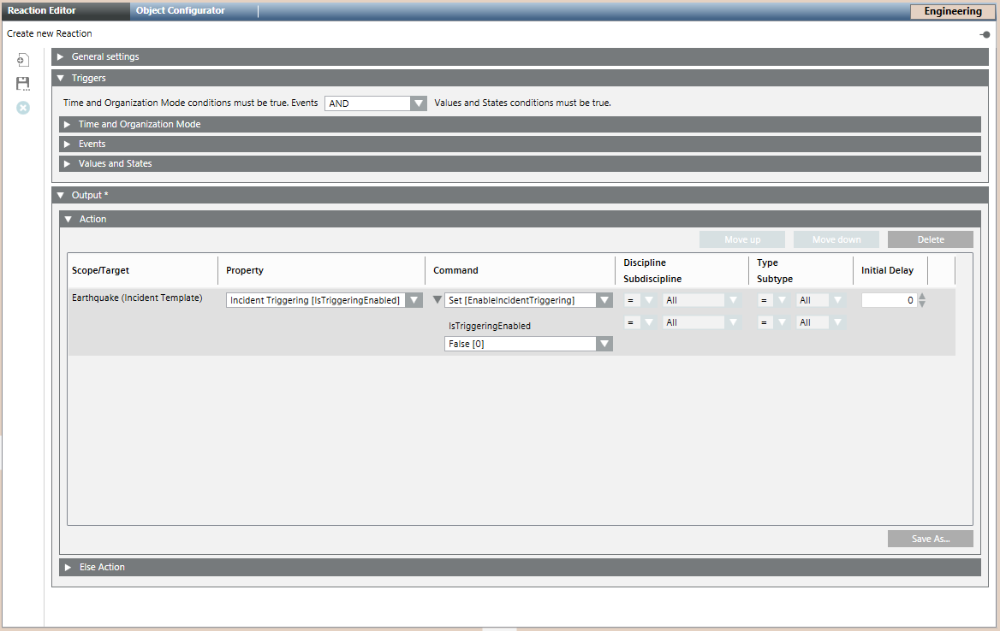
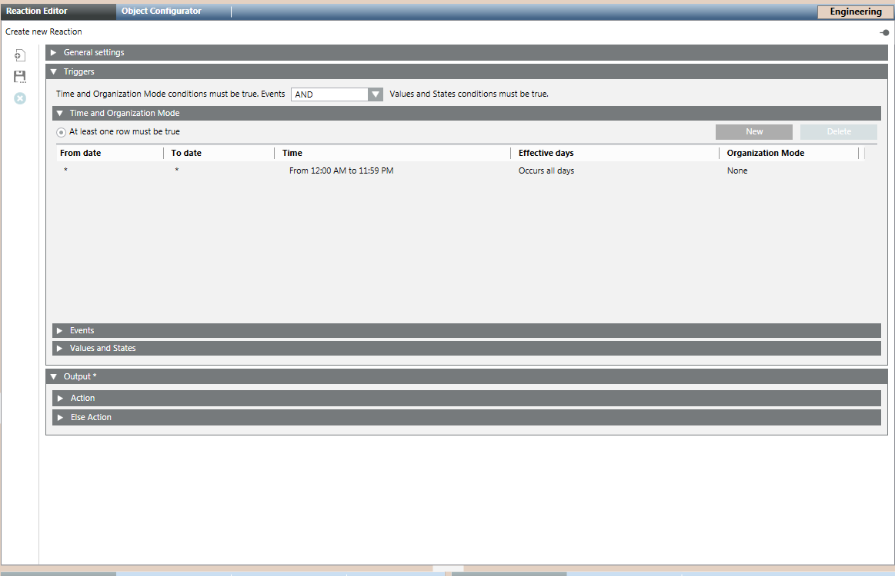
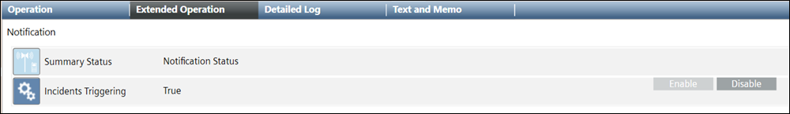

Enable Incident Triggering
Notification can send notifications for events, for example, a fire alarm in Building A, depending on the time, date, type of day (working day or weekend) and the organization mode. This is possible using the incident triggering command functionality.
This section describes procedures to enable incident triggering.
Enable Incident Triggering using Reaction
- Select Applications > Notification > Incident Templates > [incident template].
- In the Operation tab, set the Incident Triggering command to True.
- Select Applications > Logics > Reactions.
- The Reaction Editor tab displays.
- Open the Output expander and thereafter, open the Action expander.
- From System Browser, drag the incident template, for example, fire trigger, into the Action expander.

- From the Property drop-down list, select Incident Triggering [IsTriggeringEnabled] to configure the trigger for the selected incident template.
- From the Command drop-down list, select Set [EnableIncidentTriggering].
- Set the value of the IsTriggeringEnabled command to True in the check box that displays below the Command drop-down list. To disable the incident triggering, set the value of this command to False.
- In the Triggers expander, specify if the conditions specified in both, Events as well as Values and States, expanders must be true or if the conditions specified in either of the expanders must be true by selecting the appropriate operator (AND, OR) in the drop-down list.
- Open the Time and Organization Mode expander.
- Click New to add a new row and specify a new time or schedule, when you want to trigger the Initiate Incident command.

- Click Save As and enter a name and description for the incident triggering reaction.
- The new incident triggering reaction is added to System Browser.
Enable Incident Triggering for a Specific Period using Reactions
You want to enable the ‘University Update' incident to send out notifications from the university. It is expected that the Notification system triggers University Update incidents only during the 1st shift from 6.00 A.M to 6.00 P.M.
- The incident template University Update is created and configured.
- Select Applications > Notification > Incident Templates > [incident template].
- In the Operation tab, set the Incident Triggering command to True.
- Select Applications > Logics > Reactions.
- The Reaction Editor tab displays.
- In the Time and Organization Mode expander, set the value of Set Start Time and Set End Time to 6.00 A.M. and 6.00 P.M. respectively.
- Open the Output expander and thereafter, open the Action expander.
- From System Browser, drag the University Update incident template, into the Action expander.
- From the Property drop-down list, select Incident Triggering [IsTriggeringEnabled] to configure the trigger for the University Update incident template.
- From Command drop-down list, select Set [EnableIncidentTriggering].
- Set the value of the IsTriggeringEnabled command to True in the check box that displays below the Command drop-down list. To disable the incident triggering, set the value of this command to False.
- From System Browser, drag the University Update incident into the Else Action tab.
- Set the IncidentTriggering command to False.
- The incident University Update is available for triggering only in the specified time period.
Enable Incident Triggering using Command
- Select Applications > Notification > Incident Templates > [incident template].
- In the Operation tab, set the Incident Triggering command to True if you want to enable the incident trigger for the selected Incident. Set the value to False to disable the trigger. If set to False, for an incident, then the incident is not initiated even when an event matching its trigger rule occurs in the system.
- Click Set.
- The selected incident template is initiated when any event matching its trigger rule occurs in the system.
NOTE: In order to view the command results after command execution, you need to refresh the user interface by re-selecting the incident template from System Browser.
Enable or Disable Triggers for Notification
You can enable or disable triggers at project level.
- System Manager is in Engineering Mode.
- The Notification project level node is selected.
- In the System Browser, select Application View.
- Select Application > Notification.
- Select the Extended Operation tab.

- In Incidents Triggering, select the Enable or Disable buttons to enable or disable the trigger respectively.
- The trigger status displays in the Incident Triggering section.